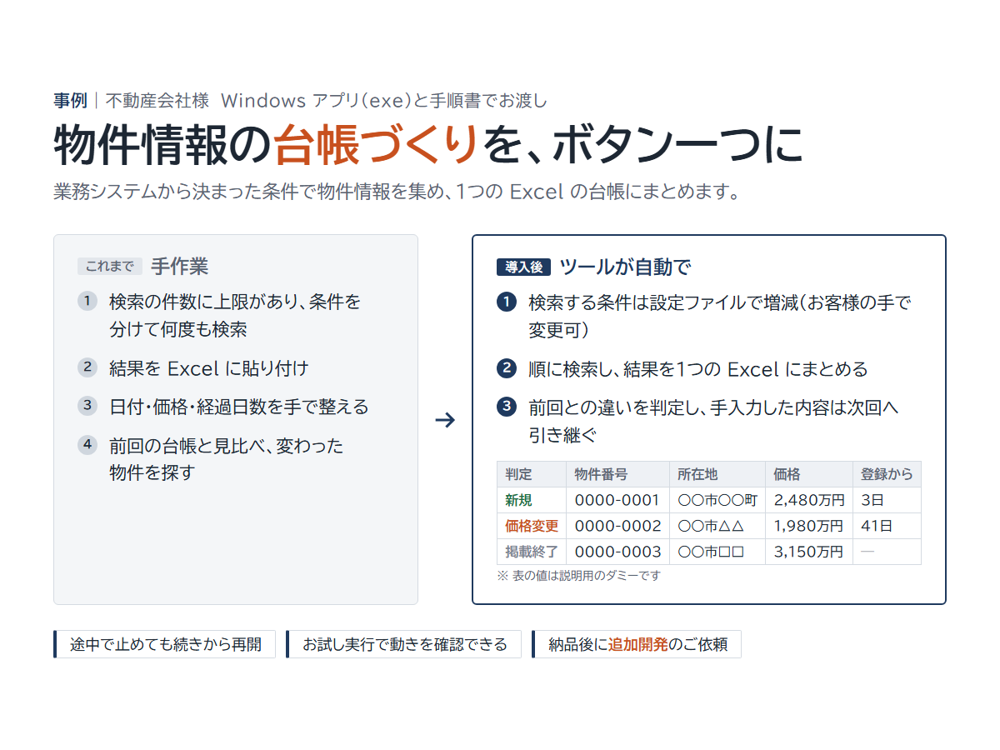
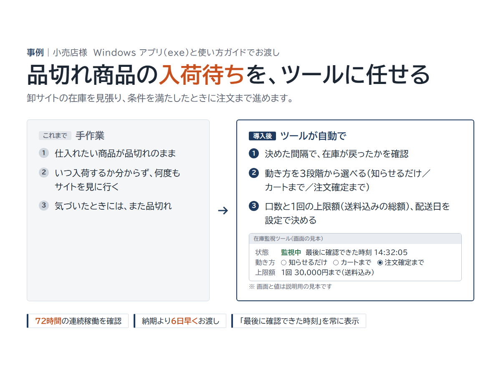
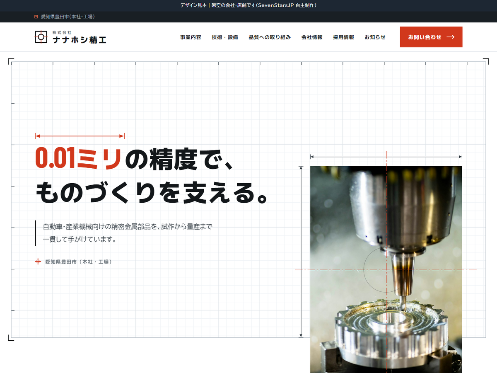
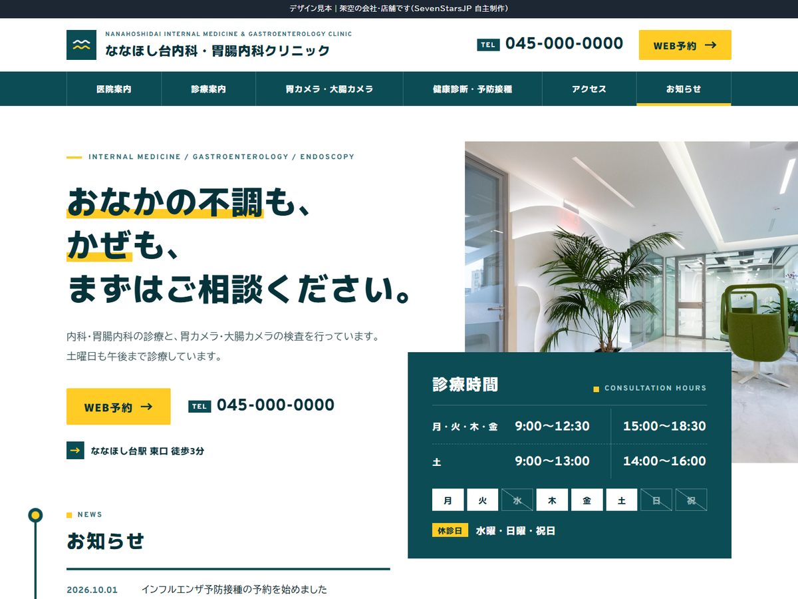
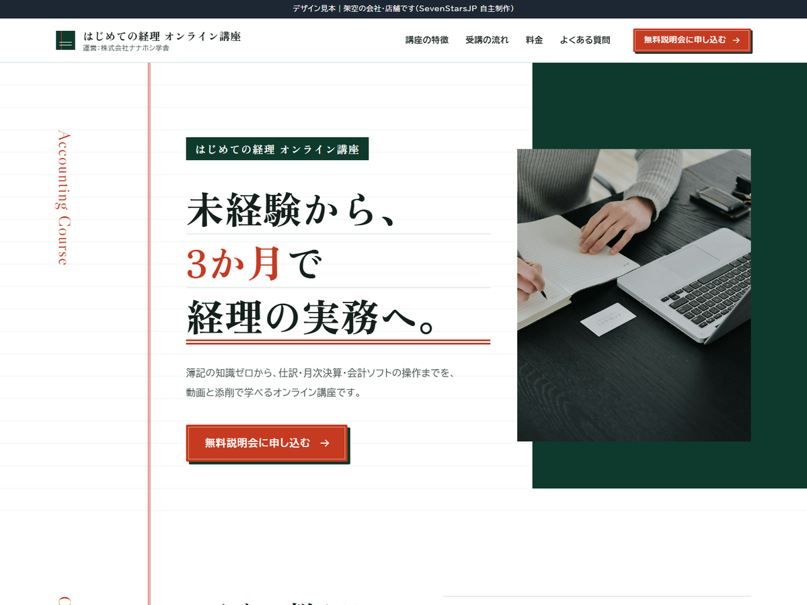

不動産会社様：物件情報の台帳づくりの自動化
業務システムから決まった条件で物件情報を集め、1つのExcelの台帳にまとめるWindowsアプリ。前回との違いの判定と、手入力した内容の次回への引き継ぎまで自動で行います。
技術Python・Playwright・Excel
お客様の名前は伏せて載せています。画面と値は説明用の見本です。

業務システムから決まった条件で物件情報を集め、1つのExcelの台帳にまとめるWindowsアプリ。前回との違いの判定と、手入力した内容の次回への引き継ぎまで自動で行います。
技術Python・Playwright・Excel

品切れの商品の入荷を監視し、条件を満たしたときに注文まで進めるWindowsアプリ。72時間の連続稼働を確かめてからお渡ししました。
技術Python・requests・Excel
架空の会社・医院・講座を題材にした自主制作の見本です（実案件の納品物ではありません）。

会社のサイトのデザイン見本。事業内容・数字で見る会社・採用情報・会社概要をまとめました。
技術HTML・CSS・JavaScript・Responsive

医院のサイトのデザイン見本。診療時間とWEB予約を最初の画面に置きました。
技術HTML・CSS・JavaScript・Responsive

講座の紹介ページのデザイン見本。お悩み・講座の特徴・受講の流れ・料金の順に読める構成です。
技術HTML・CSS・JavaScript・Responsive
まず、いまの作業の流れと、まとめたいExcelの形を伺います
対象の画面を確かめたうえで、できること・難しいこと、金額と納品予定日をお見積りでお伝えします
動く形で途中経過をお見せしながら仕上げます
業務の自動化（Python・Google Apps Script・Excel）と、Webサイトの制作（HTML・CSS・JavaScript）をしています。画面つきのアプリ（Windowsのexe）と手順書でお渡しし、正式な納品の前に、実際の業務で試していただける期間を設けています。
業務の自動化の事例は、お客様の名前を伏せて載せています。Web制作は、架空の会社・医院・講座を題材にした自主制作の見本です。専業のフリーランスとして、ココナラ・クラウドワークス・ランサーズでお仕事をお受けしています。
Python（Playwright・requests・pandas・openpyxl・tkinter・PyInstaller）、Google Apps Script、Excel VBA、HTML・CSS・JavaScript、WordPress、Next.js・TypeScript
業務の自動化・Webサイト制作のご相談は、ココナラからどうぞ。
ココナラ・クラウドワークス・ランサーズで、お仕事をお受けしています。